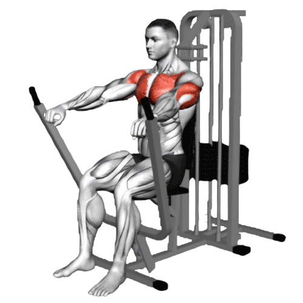
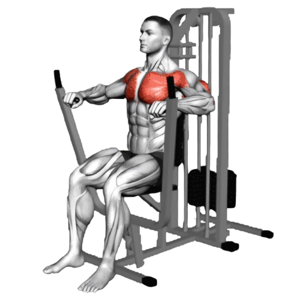

시티드 체스트 프레스

- 체스트 프레스 머신의 좌석 높이를 조정하여 손잡이가 가슴 높이(또는 약간 아래)에 오도록 한다.
- 손잡이를 앞으로 밀면서 팔을 쭉 펴준다. 팔꿈치는 너무 펴지 않도록 약간 구부린 상태를 유지한다.
- 이때 호흡은 뱉는다.
- 천천히 손잡이를 시작 위치로 되돌린다. 이때 가슴 근육이 늘어나도록 하며, 어깨를 너무 앞으로 내밀지 않도록 주의한다.
- 이때 호흡은 마신다.

주의사항
- 어깨가 너무 앞으로 나오지 않도록 한다.
- 팔꿈치가 과도하게 벌어지지 않게 조정한다.
- 손목이 과도하게 꺾이지 않게 한다.
- 지나치게 무거운 중량은 잘못된 자세를 유발할 수 있어 부상의 원인이 된다.
운동부위 및 효과
- 대흉근, 삼두근, 삼각근, 코어근육
- 체스트 프레스는 가슴 전체를 골고루 발달시키는 운동으로, 특히 대흉근의 크기와 힘을 강화해 준다.